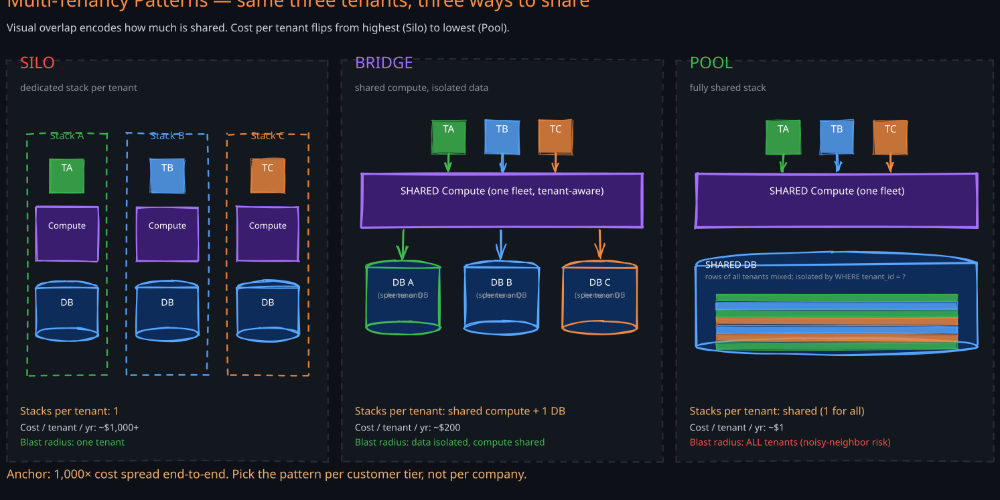
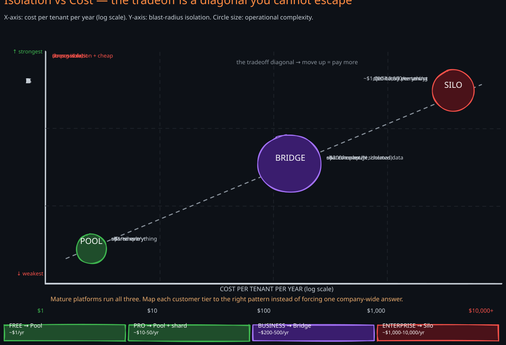
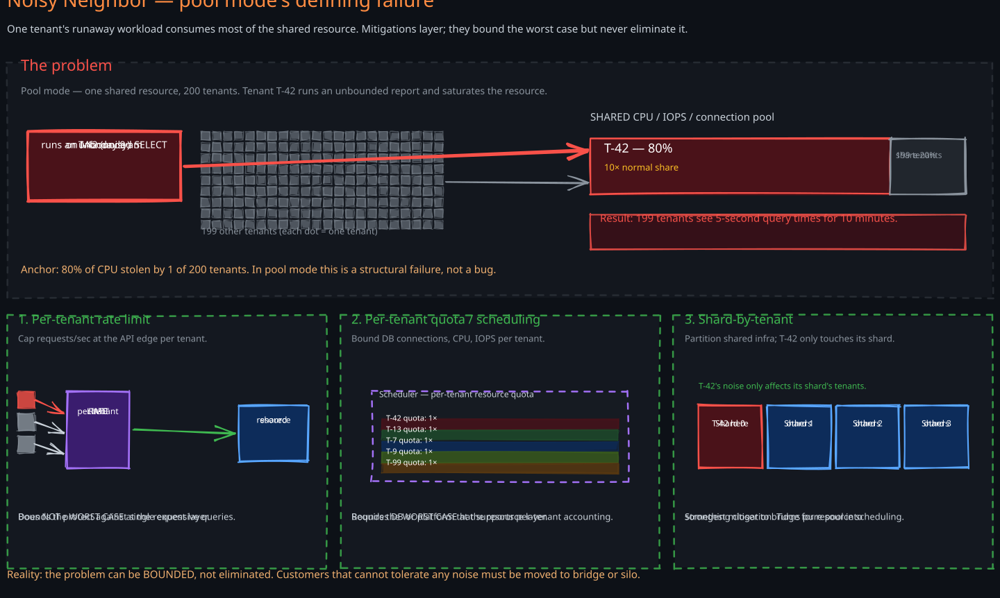

The Story
Salesforce launched in 1999 with a bet that almost every contemporary B2B vendor refused to take: every customer would share the same database. Until that point the orthodox model was “single-tenant” — each customer got their own installation, their own server, their own schema, often their own DBA. The industry believed mixing customer data in one table was reckless. Salesforce’s bet was that they could enforce isolation in software cheaply enough to make the unit economics work, and that the cost savings would pay for the engineering complexity many times over. They were right. Within a decade the default model for SaaS had flipped — new vendors used pool-mode multi-tenancy and only escaped to silo-mode for enterprise tiers willing to pay for the isolation. The interesting part of the Salesforce story is not the technical pattern; it is that the choice of multi-tenancy model is a pricing decision, not just an architecture decision. Silo costs roughly 1/tenant/year. The same product can support free, pro, and enterprise tiers only if the platform supports all three patterns simultaneously.
Multi-tenancy is what makes SaaS economically possible. A platform that serves a thousand customers from one shared stack has different unit economics than one that provisions a dedicated stack per customer — often by three orders of magnitude. But the choice is rarely binary; mature platforms run all three patterns in production, each for a different tier of customer. Picking the right pattern per workload, and migrating customers between patterns as their needs change, is the actual skill.
Related Topics: 07-Microservices, 03-Rate-Limiter, 06-Auth-Authorization, 03-Authorization-Concepts, Ch06-Partitioning, 01-Database-Concepts
1. The Fundamental Problem
Serving N customers from one platform forces a question: how much of the stack do they share? The answer is a spectrum, but three points on that spectrum — silo, pool, and bridge — dominate real-world SaaS architectures because each maps to a coherent set of tradeoffs along the cost vs isolation axis.
The dimensions every multi-tenancy decision balances:
- Cost per tenant. Cloud spend per active customer. Pool ~ 1,000, bridge somewhere in between.
- Blast radius. When something goes wrong (a bug, a noisy tenant, a compromised credential), how many other tenants are affected? Silo limits blast radius to one tenant; pool exposes all tenants to every incident.
- Customisation per tenant. Can one tenant run a different version, a different schema, a different region? Silo allows arbitrary customization; pool forces uniformity.
- Compliance posture. HIPAA, PCI, FedRAMP, data-residency rules. Some certifications are easier to obtain per-tenant in silo mode than to enforce across a pool.
- Operational burden. Number of stacks the platform team must manage. Pool = 1; silo = N; bridge somewhere in between.
No single configuration optimizes all five at once. The art is picking the right point per customer tier.
2. The Three Patterns
1. Silo (dedicated per tenant)
Every tenant runs on its own stack: dedicated compute, dedicated database, often dedicated network. The platform spins up an entire copy of the application for each customer. Isolation is physical — there is no codepath where one tenant’s data can leak into another’s because they share no infrastructure.
This is the original model for on-prem enterprise software and the only model some regulated customers (defense, healthcare) will accept. Common implementations: one Kubernetes namespace per tenant, one RDS instance per tenant, often one VPC per tenant.
Strengths:
- Strongest possible isolation — blast radius limited to one tenant
- Per-tenant customisation — different versions, plugins, schemas, regions
- Compliance straightforward — existing certifications apply per stack
- Noisy-neighbor impossible — a runaway tenant only impacts itself
Weaknesses:
- Cost scales linearly with tenants — thousands of underutilized stacks
- Operational complexity grows with tenants — N upgrades, N backups, N monitors
- Slow time-to-onboard — provisioning a new tenant means standing up infrastructure
- Cross-tenant analytics requires aggregating across N stacks
2. Pool (fully shared)
Every tenant runs on the same shared stack. The application is multi-tenant-aware: every table includes a tenant_id column, every query filters by it, and isolation is enforced entirely in software. This is the Salesforce model and the default for most modern SaaS.
Common implementations: one application fleet, one database (or a small set of shards) with tenant_id as a partition key, row-level security or in-app filtering for isolation.
Strengths:
- Lowest possible cost per tenant — shared infrastructure amortizes across thousands of customers
- Instant onboarding — new tenant is one row in the
tenantstable - Single upgrade — the application is upgraded once and every tenant inherits the change
- Easy cross-tenant analytics — all data is in one place
Weaknesses:
- Strongest blast radius — every bug, outage, and incident affects every tenant
- Noisy-neighbor problem — a runaway tenant degrades performance for all others
- Compliance complex — regulators must trust that the software-enforced isolation is correct
- Customisation expensive — per-tenant features become feature flags that bloat code
3. Bridge (shared compute, isolated data)
The middle ground. Application code and compute infrastructure are shared (one fleet), but each tenant gets a dedicated data store — often a schema-per-tenant inside a shared database, or a database-per-tenant inside a shared cluster.
The compute layer reads a tenant context from the request (JWT claim, subdomain, header) and routes data access to the tenant’s schema or database. This preserves the operational economy of one application fleet while restoring stronger data isolation.
Strengths:
- Strong data isolation — per-tenant schema or database makes leakage almost impossible
- Per-tenant backup, restore, and encryption keys
- Easier compliance than pool — data boundaries are physically separate
- Per-tenant performance tuning — one slow tenant’s queries do not affect others’ tables
Weaknesses:
- Schema drift — N schemas drift over time as migrations partially apply
- Cross-tenant analytics harder than pool (but easier than silo)
- Database connection pooling complicated — one connection per tenant per app instance scales poorly
- Onboarding slower than pool — requires creating a schema or database per new tenant

The diagram shows the same three tenants under each pattern. What changes is how much they share — silo shares nothing, pool shares everything, bridge shares compute but not data.
3. The Isolation Axis vs the Cost Axis
The three patterns are points on a continuous tradeoff between cost per tenant and isolation strength. Plotting them clarifies why a single product commonly uses all three at different tiers.

Operational complexity is the hidden third axis. Pool is operationally simplest (one stack to operate); silo is operationally simplest per tenant but the platform team’s burden grows linearly. Bridge sits in the middle on cost but is often the most complex operationally because schema migrations must coordinate across N schemas without taking the platform down.
The right pattern depends on what the customer is paying for. A free-tier user paying 1,000/year silo; an enterprise customer paying $500,000/year expects silo-level isolation. The pattern is a function of price band.
4. Tenant Identification
Every multi-tenant request must answer: which tenant does this belong to? The identification mechanism propagates through the entire stack and determines what data the request is allowed to read or write.
Common identification mechanisms:
- Subdomain.
tenantA.example.com,tenantB.example.com. The DNS / load balancer extracts the tenant from the host header. Friendly URLs but coupled to DNS provisioning. - Path prefix.
example.com/tenantA/.... Simpler to provision than subdomains; uglier URLs. - JWT claim. The authenticated token carries
tenant_id. Works for API clients and clients that have already authenticated; does not work for the first unauthenticated request (login screen). - Custom header.
X-Tenant-Id: tenantA. Common for internal service-to-service calls behind an API gateway.
Whatever mechanism is used at the edge, the tenant context must be propagated immutably through the request: into application code, into database queries, into outbound calls to other services, into logging and tracing. A single point in the request path that loses the tenant context is a cross-tenant data leak waiting to happen.
The discipline: tenant identification is extracted once at the edge and passed explicitly through every layer. Application code should treat the absence of tenant context as a hard error, not a default-to-some-tenant fallback.
5. The Noisy-Neighbor Problem
Pool mode’s defining failure is the noisy neighbor: one tenant’s workload consumes disproportionate resources and degrades everyone else. The classic example is a tenant that runs an unbounded report on a Monday morning and consumes 80% of database CPU for fifteen minutes, slowing every other tenant’s transactional queries to a crawl.

The problem is structural — shared infrastructure means shared bottlenecks. Three mitigations layer on top of each other:
- Per-tenant rate limits. Cap the number of requests per second per tenant at the API edge. Bounds the worst case at the request layer but does not protect against expensive individual queries.
- Per-tenant quota and resource scheduling. Database connection pool quotas per tenant; CPU and IOPS quotas at the storage layer. Bounds the worst case at the resource layer. Requires a database or platform that supports per-tenant accounting — not all do.
- Shard-by-tenant. Partition the shared infrastructure by tenant such that one tenant’s noisy workload only affects a subset of others. Implemented at the database via partitioning on
tenant_id; at the application via dedicated pools per shard. This is the most effective mitigation and turns pure pool mode into something closer to bridge mode for resource scheduling.
The noisy-neighbor problem cannot be eliminated in pool mode — it can only be bounded. Customers that cannot tolerate even bounded noise must be moved to bridge or silo.
6. Data Isolation Mechanisms
In silo mode the database itself enforces isolation — separate instances cannot share data. In pool and bridge modes, isolation is enforced by something inside the database or application. Three common mechanisms, in increasing strength:
- Application-layer filtering. Every query in the application includes a
WHERE tenant_id = ?clause. Isolation depends entirely on developer discipline; a single missing clause leaks every tenant’s data. This is the model most early-stage SaaS uses, and the model most large-incident postmortems trace back to. - Row-level security (RLS). The database engine itself enforces per-row visibility based on a session variable set at connection time. Postgres RLS is the canonical implementation. The application sets
SET app.current_tenant = 'tenantA'after each connection check-out; queries without an explicitWHEREclause still only see that tenant’s rows. Removes the dependency on developer discipline. - Schema-per-tenant. Each tenant has its own schema (
tenantA.users,tenantB.users). The application sets the search path per request. Cross-tenant queries become impossible at the SQL level. Strong isolation; complicates schema migrations because N schemas must be migrated atomically. - Database-per-tenant. Each tenant has its own database within a shared cluster. The application chooses the connection per request. Even stronger isolation; even harder schema management; per-tenant backup, restore, and encryption keys become trivial.
The mechanism chosen interacts directly with which pattern the system implements. Pool typically uses application-layer filtering or RLS. Bridge typically uses schema-per-tenant or database-per-tenant.
7. Operational Patterns
Mature SaaS platforms commonly run all three patterns simultaneously, mapped to a customer tier ladder:
| Tier | Pattern | Cost ceiling | Isolation needs |
|---|---|---|---|
| Free / starter | Pool | $1/tenant/year | Best-effort; small per-tenant resource caps |
| Pro / team | Pool with per-tenant shard or RLS | $10-50/tenant/year | Bounded noisy-neighbor; SLA on availability |
| Business | Bridge (schema or DB per tenant) | $200-500/tenant/year | Per-tenant data isolation; per-tenant backup |
| Enterprise | Silo (dedicated stack) | $1,000-10,000/tenant/year | Compliance, customisation, private cloud |
Migration paths matter as much as the patterns themselves. A free tenant who upgrades to enterprise should not have to re-onboard from scratch. The platform must support migrating a tenant’s data from pool to bridge to silo as their needs grow. The reverse migration (consolidating an unused silo customer back into pool) is rarer but also valuable for cost recovery.
The migration mechanism is typically:
- Provision the target pattern’s infrastructure (new database, new schema, new stack)
- Backfill the tenant’s data via export / import or CDC
- Cut over reads at the application’s tenant-routing layer
- Cut over writes once the new target has been stable
- Decommission the old location
This is the strangler-fig pattern applied to a single tenant, and the same discipline applies: each step is reversible, no step is irreversible until the previous has been stable.
8. Failure Modes
- Missing tenant filter. A developer writes
SELECT * FROM users WHERE email = ?withoutAND tenant_id = ?. The endpoint returns users from every tenant whose email matches. This is the textbook multi-tenant data leak and the strongest argument for row-level security or schema-per-tenant. Mitigation: never rely on application-layer filtering alone above the smallest tier. - Schema drift in DB-per-tenant. A migration is applied to 850 of 1,000 tenant databases and fails on the 851st due to data-specific constraint violations. The remaining 150 are now on the old schema. New code assumes the new schema. Half the platform is broken in subtle ways. Mitigation: schema migrations must be designed to be idempotent and forward-compatible, applied in batches with health checks, and the application must tolerate both schemas during the rollout window.
- Ballooning silo cost. Three years in, the platform has 4,000 silo customers, most of whom use < 5% of the resources their dedicated stacks provide. Cloud spend is dominated by unused capacity. Mitigation: tier ladder with explicit downgrade paths; auto-detect underutilized silos and offer customers a bridge tier with the same SLA at lower cost.
- Tenant-key compromise. A tenant’s API key is leaked publicly. An attacker queries the platform with that key and exfiltrates the tenant’s data. In pool mode the blast is limited to that tenant if isolation is correct — but in silo mode the attacker might also enumerate infrastructure (DNS names of the silo, S3 buckets, etc.) that are tenant-specific. Mitigation: rotate keys quickly; treat per-tenant infrastructure names as semi-secrets in silo mode.
- Per-tenant encryption key sprawl. Bridge or silo customers each get their own KMS key. After three years the platform has 8,000 KMS keys, costing more than the data they protect, and key rotation becomes a months-long project. Mitigation: design key-per-tenant only for customers that actually require it (compliance, BYOK); pooled-tier customers can share a platform key.
- Cross-tenant cache pollution. A shared cache key includes the resource ID but not the tenant ID. Tenant A’s data is cached under a key tenant B’s query also produces. Tenant B reads tenant A’s data from cache. Mitigation: every cache key must include
tenant_idas a prefix; treat this as an invariant enforced by the cache client library.
9. Technology-Agnostic Comparison
| Dimension | Silo | Bridge | Pool |
|---|---|---|---|
| Cost per tenant | Highest ($1,000+/yr) | Medium ($100-500/yr) | Lowest ($1-10/yr) |
| Blast radius | One tenant | One tenant (data) / many (compute) | All tenants |
| Customisation per tenant | Arbitrary | Limited (schema-level) | Feature flags only |
| Compliance posture | Straightforward; certifies per stack | Strong; data-plane isolated | Requires trust in software isolation |
| Onboarding speed | Slow (provision infra) | Medium (create schema / DB) | Instant (insert row) |
| Operational burden | High (N stacks) | Medium (1 fleet, N schemas) | Low (1 stack) |
| Cross-tenant analytics | Hard (aggregate across N stacks) | Medium | Trivial (one warehouse) |
| Noisy-neighbor risk | None | Compute only | Yes; requires mitigation |
| Schema migration | N independent migrations | N coordinated schema migrations | One migration |
| Per-tenant encryption | Native (own infra) | Easy (per-schema or DB) | Hard (shared store) |
| Typical tier | Enterprise / regulated | Business | Free / starter / pro |
Revision Summary
- Multi-tenancy is the architectural choice that makes SaaS economically viable. The decision is also a pricing decision — silo costs ~1, bridge in between. Mature platforms run all three simultaneously mapped to customer tiers.
- Silo — dedicated stack per tenant. Strongest isolation, customisation, and compliance posture. Highest cost. Used for enterprise and regulated customers.
- Pool — fully shared stack with isolation enforced in software (
tenant_idcolumn, row-level security). Lowest cost, instant onboarding, easy cross-tenant analytics. Largest blast radius and noisy-neighbor risk. - Bridge — shared compute, isolated data (schema-per-tenant or DB-per-tenant). Middle ground on cost, strong data isolation, but complicates schema migrations and connection pooling.
- Tenant identification must be extracted once at the edge (subdomain, JWT claim, header) and propagated immutably through every layer. A request that loses tenant context is a cross-tenant leak waiting to happen.
- Noisy-neighbor is pool’s defining failure. Mitigations layer: per-tenant rate limits → per-tenant resource quotas → shard-by-tenant. The problem can be bounded but not eliminated.
- Data isolation mechanisms in increasing strength: application-layer filtering (depends on developer discipline) → row-level security (DB-enforced) → schema-per-tenant → DB-per-tenant. Application-layer filtering alone is the source of most large multi-tenant data-leak incidents.
- Tier ladder + migration paths matter as much as the patterns. A tenant should be able to move from pool to bridge to silo as they grow, using the strangler-fig discipline (each step reversible, no step irreversible until the previous is stable).
- Failure modes to watch: missing tenant filters, schema drift in DB-per-tenant, ballooning silo cost, tenant-key compromise, per-tenant encryption key sprawl, cross-tenant cache pollution.
Deep Understanding Questions
-
Tier crossover. A free-tier tenant in pool mode wins a large contract and upgrades to enterprise (silo). Their existing data is mixed with thousands of others in shared tables. What is the migration plan, and what consistency guarantees can you offer during the cutover? Ans:
-
Compliance audit. A potential customer’s compliance team demands that no other tenant’s data ever shares a database with theirs. Your platform serves them today from pool mode. What are your options short of standing up a silo, and how do you communicate the tradeoffs honestly? Ans:
-
Noisy-neighbor blast. A single tenant in pool mode runs a poorly indexed query that scans 50M rows and saturates the primary database. 200 other tenants see 5-second response times for the next ten minutes. Walk through the immediate response, the medium-term mitigation, and the structural fix. Ans:
-
Schema migration at scale. You have 5,000 tenants in bridge mode (DB-per-tenant). A required migration adds a non-nullable column with a default. What is the safe rollout plan, and what does the application have to tolerate during the rollout window? Ans:
-
Cross-tenant search. Your platform offers a “global search” feature that searches across the workspaces a user belongs to. The user belongs to workspaces in two different tenants. In silo mode each workspace’s data is in a different stack. How do you implement this without violating silo isolation? Ans:
-
Per-tenant encryption keys. An enterprise customer demands BYOK (bring-your-own-key). They want to be able to revoke the key and render their data permanently unreadable. How does this constrain the patterns the customer can be served from, and what is the operational impact on your backup, restore, and disaster recovery procedures? Ans:
-
Tenant identification failure. A new endpoint is added that forgets to extract
tenant_idfrom the JWT. Code review misses it. Production traffic flows. What detection mechanisms (CI, runtime, observability) should catch this before a customer notices? Ans: -
Data residency. A customer in the EU demands their data never leaves the EU. You serve them from pool mode in us-east. The shared database is in the US. What are the patterns for retrofitting data residency to a previously pool-only platform, and at what point is it cheaper to migrate them to silo in eu-west? Ans:
-
Connection pool exhaustion. In bridge mode (DB-per-tenant, 2,000 tenants) each application instance maintains a connection pool per tenant it has recently served. With 100 application instances, you have 200,000 idle connections to the database cluster. The DB starts rejecting new connections. What are the architectural responses? Ans:
-
Pool-to-bridge migration during incident. A specific tenant in pool mode keeps causing noisy-neighbor incidents despite rate limits. The product team wants to migrate them to bridge mode urgently. The migration normally takes a week. What does an “urgent” version look like, and what risks does compressing the timeline introduce? Ans: